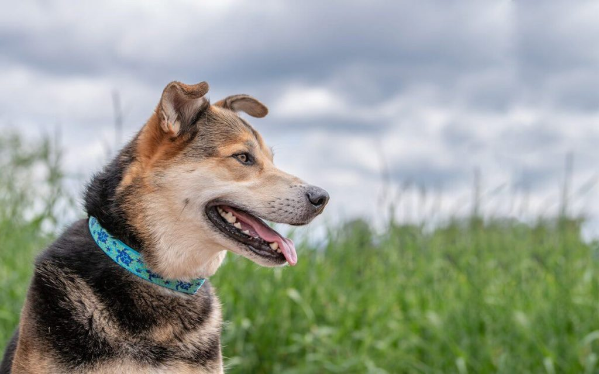
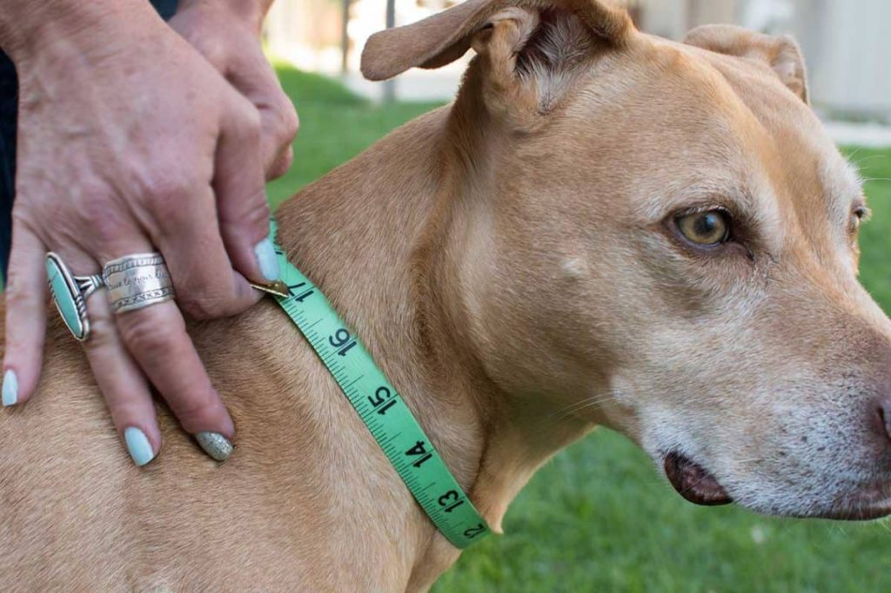

اگه تا به حال برای خرید قلاده به پت شاپ حضوری یا آنلاین مراجعه کرده باشید حتما با تنوع بسیار بالای محصولات روبرو شدید. امروزه قلاده سگ در صدها رنگ و جنس و طرح و اندازه وجود داره و واقعا آدم رو برای انتخاب بهترین محصول سردرگم و گیج میکنه. ولی تفاوت این قلادهها با هم چیه و کدوم نوع قلاده برای سگ من مناسبتره؟
در این مطلب تصمیم گرفتیم در مورد انتخاب و خرید یکی از مهمترین وسایل سگ یعنی قلاده صحبت کنیم. اول روش تعیین سایز قلاده سگ رو بهتون یاد میدیم. بعد در مورد انواع قلاده و بند قلاده و مزایا و معایب هرکدوم توضیح میدیم و برای راحتی بیشتر شما، لینک خریدشون از سایت دیجی کالا رو هم در اختیار تون قرار میدیم.
در ادامه با ما در پت پرس همراه باشید.
چرا استفاده از قلاده و بند قلاده سگ لازمه؟
شاید استفاده از قلاده در حیواناتی مثل گربه بیشتر جنبه ظاهری و زیبایی داشته باشه؛ اما در مورد سگ اصلا اینطور نیست!
- یکی از مهمترین کاربردهای قلاده در زمینه تربیت سگ است. در واقع، خیلی از قلادهها اساسا برای آموزش طراحی شدن و ابزار آموزشی حساب میشن. از زمانی که یه توله سگ بامزه وارد خونهتون میشه با کمک قلاده میتونید آموزشهای اولیه و لازم رو بهش یاد بدید و تربیتش کنید.
- اهمیت دیگه قلاده برای حفظ امنیت خود سگه. سگها موجوداتی بازیگوش و کنجکاون و قرارگرفتن در فضای بیرون از خونه اونا رو هیجان زده میکنه. با استفاده از قلاده و بندقلاده میتونید به راحتی فعالیتش رو کنترل کنید و از فرار کردن و مشکلاتی ازاین دست پیشگیری کنید.
- از طرفی با نصب پلاک به قلاده که روش اسم سگ، آدرس و شماره تلفن خودتون رو نوشتید میتونید در صورت گم شدن سگ امیدوار باشید که یابنده با شما تماس بگیره و سگ عزیزتون رو به خونه و پیش شما برگردونه.
چطور سایز قلاده سگم رو اندازهگیری کنم؟
قبل از اینکه بخواید قلاده بخرید اول باید سایز مناسب سگتون رو به دست بیارید. برای اینکار از یه متر خیاطی استفاده کنید و دور گردن سگتون (دقیقا جایی که قلاده قرار میگیره) رو اندازه بگیرید. البته طوری اندازه بگیرید که به اندازه دو انگشت بین متر و گردنش فاصله باشه. این عدد رو یادداشت کنید و براساس جدول پایین سایز مناسب سگتون رو متوجه بشید:
| سایز قلاده | اندازه دور قلاده cm | نژادهایی مثل |
|---|---|---|
| XS | ۳۰-۱۵ | بیچون، شیوهواهوا، پودل عروسکی |
| S | ۳۸-۲۲ | بیگل، داشهوند، پودل، اشنایزر |
| M | ۴۵-۳۰ | کورگی، کوکر اسپانیل، دالماتیان، پوگ |
| L | ۵۳-۳۸ | باست، باکسر، بولداگ، دوبرمن، رتریور، ژرمن شپرد، لابرادور |
| XL | ۶۰-۴۵ | ژرمن شپرد، گلدن رتریور، لابرادور، روتوایلر، باکسر، آکیتا |
| XXL | ۷۰-۵۳ | گریت دین، نیوفاندلند، سنت برنارد |
انواع قلاده سگ و ویژگیهای آنها
به طور کلی دو نوع قلاده سگ داریم:
- قلاده کتفی
- قلاده گردنی
قلاده کتفی
قلاده کتفی (harness) که به نام قلاده کمری یا بدنی یا قلاده لباسی سگ هم شناخته میشه شبیه به جلیقه یا لباسه و دور بدن سگها بسته میشه. سگها با این نوع قلاده احساس راحتی و آزادی بیشتری میکنن، اما دقیقا به همین دلیل آموزش و تربیت حیوون با قلاده کتفی سختتره.
مزایای قلاده کتفی
- سگ احساس راحتی بیشتری داره و برای سگهای کوچک و به عنوان قلاده سگ پاکوتاه بسیار مناسبه.
- فشاری به گردن و چشم سگ نمیاره.
معایب قلاده کتفی
- برای آموزش سگ زیاد توصیه نمیشه.
- سگ آموزش ندیده حس آزادی بیشتری میکنه و ممکنه به کشیدن قلاده تشویق بشه.
- قیمت بالاتری از قلاده گردنی داره.
قلاده کمری سگ ژرمن شپرد، هاسکی، روتوایلر و …
این قلاده طوری طراحی شده که با کشش زیاد حیوون اذیت نشه و با ۵ سانتیمتر عرض مقاومت و استحکام خوبی داره.
رنگ شبرنگ روی قلاده کتفی باعث میشه حیوون به خوبی در تاریکی شب دیده بشه و از حوادث مختلف جلوگیری بشه.
این قلاده کمری برای سگهای بزرگ و قوی مثل ژرمن شپرد، هاسکی، روتوایلر و … مناسبه.
قلاده جلیقهای سگ مدل شب رنگ
این قلاده مخصوص سگهای متوسط تهیه شده و بسیار سبک و قابل دوامه.
- شبرنگ بودن
- قابلیت باز و بسته شدن آسان و سریع
- تنظیم سایز سریع و راحت
- لایه داخلی نرم و قابل شستشو

قلاده گردنی؛ بهترین قلاده برای سگ
قلاده گردنی (Collar) متداولترین و شاید بهترین قلاده برای اکثر نژادهای سگه. این قلاده یک نوار باریک از جنس چرم، فلز، پلاستیک، پارچه و … است که دور گردن سگ بسته میشه و با یک بند قلاده میشه حیوون رو کنترل کرد.
فواید قلاده گردنی
- کنترل حیوون با این قلاده بسیار راحتتره.
- برای آموزش راه رفتن به توله سگها مناسبتره.
- پوشیدن و درآوردنش راحتتره.
- قیمت پایینتری داره.
معایب قلاده گردنی
- احتمال آسیب به گردن سگ وجود داره (مخصوصا سگهایی که خوب تربیت نشدن و عادت به کشیدن قلاده دارن)
- برای سگهایی که مشکلات تنفسی دارن اصلا گزینه خوبی نیست!
- کشیدن بیش از حدش به چشمهای سگ هم فشار وارد میکنه.
قلاده گردنی تنوع زیادی از نظر ظاهر و جنس داره که در ادامه برخی از معروفترین اونا رو معرفی میکنیم:
قلاده آموزشی سگ یا خفتی
این نوع قلاده همونطور که از اسمش مشخصه برای آموزش و تربیت سگ به کار میره. خیلی از مربیان سگ برای آموزش سگهای لجباز که مدام قلاده رو میکشن از این قلاده دستوری استفاده میکنن، قلاده با کشیدن تنگتر میشه و حس بد خفگی به حیوون دست میده و اینطوری میفهمه که هربار قلاده رو بکشه با این تاییدیه منفی روبرو میشه و دست از این کار برمیداره.
اما برای استفاده از این نوع قلاده باید حرفهای باشید چون در صورت استفاده نامناسب ممکنه به حیوون آسیب جدی وارد بشه. به همین دلیل به صاحبان سگی که تجربه زیادی در تربیت سگ ندارن توصیه نمیشه.
قلاده ضد پارس سگ
این نوع قلاده برای رفع عادت پارس کردن سگها استفاده میشه و در واقع نوعی قلاده تربیتی حساب میشه. این قلاده که با اسامی مختلفی مثل قلاده الکترونیکی، قلاده سگ برقی و حتی قلاده ضد واق واق شناخته میشه قطعهای داره که به ارتعاش حساسه.
وقتی سگ شروع به پارس کردن میکنه این دستگاه ارتعاش گلوی سگ رو تشخیص میده و شوک الکتریکی خفیفی به سگ وارد کنه. این شوک برای سگ اصلا خوشایند نیست و سگ کم کم یاد میگیره که هربار که پارس میکنه باید منتظر این شوک باشه.
استفاده از این نوع قلاده درسته؟
شاید استفاده از این قلاده راحتترین راه حل به نظر برسه، اما به خاطر دردی که به سگ وارد میکنه مخالفان زیادی داره و بسیاری از مربیان معتقدند وقتی با آموزش دادن به راحتی میشه رفتارهای بد پارس کردن رو اصلاح کرد چه نیازی به چنین وسیله زجرآور و غیر انسانی وجود داره؟
ما در تیم پت پرس به هیچ وجه استفاده از این نوع قلاده غیرانسانی رو توصیه نمیکنیم و پیشنهاد میکنیم با استفاده از کتابهای تربیتی و یا کمک گرفتن از مربیان حرفهای سگتون رو بدون آزار و اذیت تربیت کنید.
در همین رابطه تیم حرفهای پت پرس کتابی را آماده کرده است که در یکی از سر فصلهای آن به موضوع جلوگیری از پارس کردن سگ پرداخته شده. در این کتاب میتوانید روشهای آموزشی برای جلوگیری از پارس سگ را مطالعه کنین. کتاب رو از طریق لینک زیر دانلود کنین.
برای آموزش سگ به شیوه درست باید بدونین چه موقع، کجا، چه رفتاری رو چه جوری بروز بدید که سگ ببینه و ازش یاد بگیره. این ایبوک قدم به قدم و کاربردی به شما یاد میده از روز اول با سگ چه جوری رفتار کنین و چه چیزهایی رو یادش بدید و کمک میکنه یه سگ با تربیت و خوش رفتار تحویل جامعه بدید 

قلاده زنجیری سگ؛ بهترین انتخاب برای قلاده سگ نگهبان و گله
این نوع قلاده کاملا از حلقههای فلزی تشکیل شده و برخی مربیان سگ ازش به عنوان قلاده آموزشی برای سگهای بزرگ مثل ژرمن، هاسکی، سگ پیت بول، روتوایلر و قلاده نگهبان … استفاده میکنن.
هیچ وقت سگی که قلاده زنجیری به گردنش بسته شده رو تنها رها نکنید. به خصوص در هوای سرد و یخبندان که قلاده و زنجیر به سختی تکون میخوره و امکان آسیب زدن به گردن حیوونتون وجود داره.
فواید قلاده سگ زنجیری
- دوام بسیار بالا
- ظاهر خشنی به سگ میده
- بو نمیگیره و کثیف نمیشه
- برای آموزش سگهای لجباز و کله شق مفیده
معایب
- قلاده و زنجیر سگ نباید برای سگ آموزش ندیده استفاده بشه
- در هوای سرد و یخبندان نباید استفاده بشه
- در صورت استفاده غلط میتونه به سگ آسیب بزنه
- با هر بند قلادهای سازگار نیست

قلاده چرمی؛ انتخابی شیک برای نژادهای خاص
قلاده چرمی ظاهر بسیار شیک و دوام نسبتا بالایی داره و یکی از محبوبترین انواع قلاده برای سگ محسوب میشه.
به ویژه به عنوان قلاده سگ ژرمن شپرد یا سگ هاسکی خیلی مناسبه و ظاهر باوقار و با ابهتی به سگتون میده.
موقع خرید این نوع قلاده دقت کنید که حتما از جنس چرم طبیعی و خالص باشه، چون چرم مصنوعی یا چرم ترکیبی دوام چندان بالایی نداره و به سرعت خراب میشه.
قلاده چرمی در مقایسه با قلادههای پارچهای یا نایلونی تنوع زیادی نداره: اکثرا ساده و رنگ قهوهای طبیعی چرم هستن و بعضی دیگه طرحدار، میخ دار یا رنگی هستن.
فواید قلاده چرمی
- دوام بالا
- برای سگهایی که آلرژی یا حساسیت پوستی دارن مناسبه
- تهیه شده از مواد طبیعی
- خاصیت تنفسپذیری چرم طبیعی از بو گرفتن جلوگیری میکنه
- تمیز کردنش آسونه
معایب قلاده چرمی
- تنوع کم
- گران قیمت هستن
- چرم رنگ شده ممکنه موقع خیس شدن رنگ پس بده
قلاده شبرنگ سگ؛ زیبا و محافظ در تاریکی
قلادههایی که به اسم شبرنگ معروفند انواع مختلفی از قلادههای گردنی یا کتفی در جنسهای مختلفند که روی آنها نوارهایی وجود داره که نور رو منعکس میکنن. البته برخی مدلهای جدید هم وجود داره که از لامپهای LED داخل قلاده استفاده شده و حیوونتون در شب به معنای واقعی کلمه میدرخشه!
قلادههای شبرنگ برای بیرون بردن سگ در تاریکی شب یا صبح خیلی زود بسیار مناسبه و باعث میشه رهگذران و حتی ماشینها از فاصله دور هم سگتون رو ببینن و تشخیص بدن. برای مشاهده قیمت قلاده شبرنگ در سایت فروشنده روی لینک زیر کلیک کنید.
قلادههای نایلونی؛ متنوع، ارزان و زیبا
قلادههای نایلونی رایجترین انواع قلاده هستن و اکثر قلادههای موجود در فروشگاهها از همین جنس هستن. این نوع قلادهها در تنوعی بالای رنگ، طرح، اندازه و کیفیت و در دو نوع گردنی و کتفی وجود دارن و هرنوع سلیقهای رو راضی میکنن.
این قلادهها برای استفاده در داخل خونه یا پیادهروی مناسبن و به راحتی میشه پلاک یا تگ هویتی سگ رو بهشون وصل کرد.
اگه اهل تنوع هستید و دوست دارید قلادههای خوشگل و رنگی رنگی برای سگتون ببندید یا اگه به دنبال قلاده سگ ارزان یا انواع قلاده زیبا برای سگ هستید قلادههای نایلونی انتخاب بسیار مناسبی هستن.
مزایای قلاده پلاستیکی سگ
- قیمت بالایی ندارن
- تنوع بیشماری از رنگ و طرح و مدل دارن
- پوشیدن و درآوردنشون خیلی راحته
معایب قلاده پلاستیکی
- دوام زیادی ندارن
- به مرور بو میگیرن
- تمیز کردنشون سخته
- بعضی سگها ممکنه به نایلون حساسیت و آلرژی داشته باشن
قلاده تزئینی
علاوه بر قلادههایی که در بالا گفتیم، یه سری هم هستن که بیشتر جنبه تزیینی دارن تا کاربردی.
این قلادهها صرفا ظاهر خوشگل و زیبایی دارن و اغلب هم به عنوان قلاده سگهای کوچک و مینیاتوری مثل تریر، سگ پودل، پامرانین و … استفاده میشه.
قلادههای تزئینی اصلا محکم نیستن و برای پیادهروی و کنترل سگ نباید استفاده بشن. فقط اگه میخواید سگتون تو خونه یا برای مهمونی ظاهر زیباتری داشته باشید میتونید از این قلادهها برای سگتون انتخاب کنید.

نکات مهم در مورد انتخاب قلاده مناسب برای توله سگ
خرید قلاده برای توله سگ کمی متفاوته. تولهها به سرعت در حال رشد هستن و لازمه موارد زیادی رو در نظر بگیرید.
موقع خرید قلاده توله سگ به نکات زیر توجه کنید:
- قلادهای بخرید که فضای کافی برای رشد توله داشته باشه و سایزشون قابل تغییر باشه. تولهها به ویژه در چند ماه اول زندگی با سرعتی باورنکردنی بزرگ میکنن و چند سایز عوض میکنن. با این حال، از خرید قلاده خیلی بزرگ و گشاد برای توله سگ هم خودداری کنید.
- درسته که باید تغییر سایزش در آینده رو مدنظر داشته باشید، اما قلاده خیلی گشاد هم مشکلات زیادی رو به دنبال داره. توله میتونه به راحتی قلاده رو از گردنش دربیاره و اونو بجوه. همچنین آموزش و تربیت توله با یه قلاده شل و ول عملا غیرممکن خواهد بود!
- تولهتون رو مرتب اندازهگیری کنید. هر توله مسیر رشد خودش رو داره و نمیشه تغییر سایزش رو دقیقا پیش بینی کرد. به همین دلیل حداقل هر ۲ هفته یکبار دور گردنش رو اندازه بگیرید و اگه قلاده قدیمیش زیادی تنگ شده بود حتما یه قلاده بزرگتر براش بخرید.
قلاده مناسب برای توله سگ و سگهای مینیاتوری
- قلاده کتفی برای توله سگ و نژادهای کوچک
- به همراه بند قلاده ۱ متری
- سبک، نرم و لطیف
- رنگ بندی جذاب

انتخاب بهترین بند قلاده
حالا که در مورد قلاده صحبت کردیم نوبت به انتخاب بند قلاده میرسه. بند قلاده هم به اندازه خود قلاده متنوع و مختلفه، اما حتما باید با نوع قلاده متناسب و هماهنگ باشه؛ مثلا برای یه قلاده زنجیری نمیتونید بند ظریف و نایلونی بخرید و به بند زنجیری نیاز دارید!
اکثر قلادهها همراه با بند مناسبشون فروخته میشن تا خرید برای صاحبان سگ راحتتر بشه.
اندازه و طول بند قلاده هم فاکتور مهمیه که باید بهش توجه کنید. طول بند به جثه سگ، سبک زندگی خودتون و سگتون، میزان فعالیت و جنب وجوش سگ و … بستگی داره.
به طور کلی طول استاندارد برای بند قلاده حدود ۲ متره. البته این روزها مدلهای متنوعی از بند قلاده وجود داره؛ مثل بند قلاده جمع شو که با فشار دکمه، قفل باز میشه و میتونید بسته به موقعیت طول بند رو بلندتر یا کوتاهتر کنید.
بند قلاده سگ مدل نیناپت
- مناسب برای سگهای کوچک
- لید طرحدار
- دارای تسمهی فوقالعاده نرم و ضد حساسیت
- دارای قفل بسیار قوی
- قابل شستشو
- دارای ۶ رنگ متفاوت
بند قلاده زنجیر سگ بزرگ
- زنجیر قلاده از جنس فولاد ضد برش و سایش تهیه شده و استحکام بسیار بالایی داره.
- جنس حلقه زنجیر سر قلاده فولادیه و با co2 جوش داده شده.
- دسته زنجیر از جنس چرم گاومیش درجه یک تهیه شده و برای در دست گرفتن خیلی راحت و مقاومه.
نکاتی در مورد انتخاب سگک قلاده
نوع و جنس سگک تا حد زیادی به سلیقه شما بستگی داره، اما در این مورد هم لازمه به نکاتی توجه کنید.
سگک پلاستیکی که در اغلب قلادههای ارزان وجود داره طرز استفاده بسیار سادهای دارن، اما در برابر تغییرات شدید دما (سرمای شدید یا آفتاب سوزان) به راحتی خراب و شل میشن و با کمی تلاش خود سگ به راحتی باز بشن! بنابراین اگه دوام و ماندگاری سگک براتون مهمه بهتره سمت جنس پلاستیکی نرین.
سگک فلزی دوام بسیار بالاتری داره و مطمئنتره. برای سگهایی که عادت به جویدن قلادهشون دارن یا سگهای بزرگتر و قویتر که با قدرت بیشتری قلادهشون رو میکشن (مثلا برای قلاده سگ هاسکی یا سگ ژرمن و …) سگک فلزی مناسبتره.
به طور خلاصه، انتخاب قلاده مناسب برای سگتون در واقع پاسخی به ۵ سوال اساسی زیر هست:
- به چه منظور میخوام برای سگم قلاده بخرم؟ برای زیبایی، پیادهروی، آموزش، استفاده روزانه و …؟ یادتون باشه که معمولا لازمه چند نوع قلاده برای سگتون بخرید.
- با توجه به جثه سگ، سلیقه خودم و میزان فعالیتش چه جنس قلادهای مناسبتره؟
- همراه با قلاده چه لوازم جانبی باید بخرم و طرز صحیح استفاده از هر نوع قلاده چطوریه؟
- آیا قلاده نوع کتفی به درد سگم میخوره؟
- چه نوع بندی برای قلاده مناسبتره؟

نظر شما چیه؟
در این مطلب سعی کردیم راهنمای کاملی برای انتخاب قلاده مناسب سگ به شما ارائه کنیم. شما از چه قلادهای برای سگتون استفاده میکنید؟ اگر تجربهای در زمینه خرید و استفاده از انواع قلاده دارید لطفا برای کامنت بگذارید تا ما هم دیگر خوانندگان از نظرات و تجربیات شما استفاده کنیم.
سلام من میخوام یه سگ پاکوتاه ۳، ۴ساله بیارم بنظرتون چه نوع قلاده ای براش مناسبه؟
سلام سیما عزیز
قلاده ی گردنی برای آموزش هایی مثل همقدم شدن و دستورات مختلف مناسب هس.